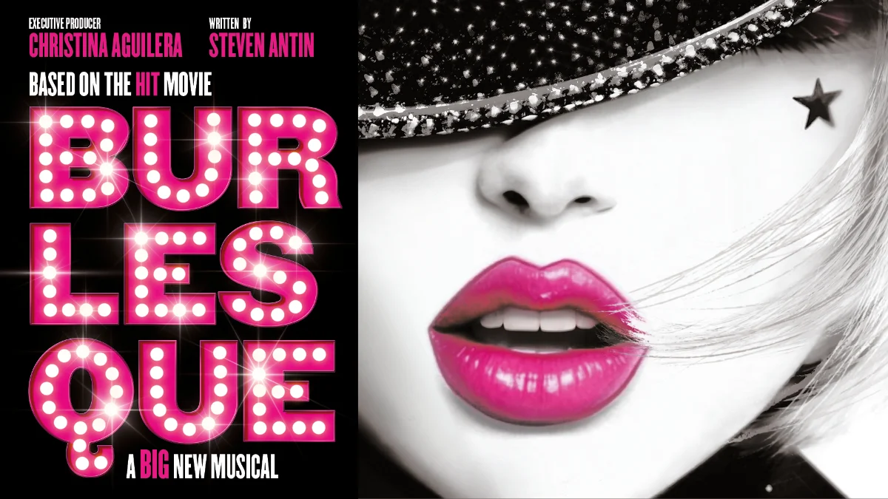

Our Family Verdict
The Alexandra, Birmingham
Until Sat 17 Oct 2026
Tickets from £25
UK Tour until May 2026
Full details: www.burlesqueonstage.com
Welcome to Burlesque the Musical.
Step inside a club like no other. A hidden world beneath the city lights where sequins sparkle, seduction shimmers and lives can change in the flick of a feather boa.
The stage adaptation of the 2010 film Burlesque, which starred Cher and Christina Aguilera, is produced by Christina Aguilera and written by Steven Antin.
Featuring songs by Christina Aguilera, Sia and Diane Warren, alongside new numbers from Todrick Hall and Jess Folley, Burlesque is a BIG musical, with a heart.
When Ali arrives in New York searching for the mother she never knew, she stumbles upon a dazzling underground scene alive with music, movement and mystery. Drawn into this intoxicating world, she begins to uncover her extraordinary voice and finds an unexpected family who will change her life forever.
Gracie O’Brien stars as Ali Rose, and wow! She has stardom in her soul.
It is unbelievable to watch her perform knowing this show is her professional stage debut.
Taking on a role created for Christina Aguilera is no easy feat, but Gracie makes it look like the role was made for her. She was barely off stage, belting out the most incredible vocals alongside continuous choreography. Remember her name! She is truly unforgettable.
It was such an honour to see her perform. I can already hear future conversations when I proudly say I saw this star in her debut professional role. Her performance truly gave me goose bumps, and I can’t wait to see what the future holds for her.
Faye Brookes plays Tess, the owner of the Burlesque Lounge. Faye is such a talented performer; it is always a pleasure to watch her perform. She showcased emotional and high-energy vocals throughout. She is fun, feisty and chaotic to watch!
Ryan Carter and Davide Fienauri are fantastic, and Tyler Davis is very funny and sweet. The entire cast has incredible vocals and is a joy to watch. Their energy is infectious, their talent is phenomenal and the whole show is bursting with talent.
The show has attitude, sex appeal, passion, fashion and glamour. Its choreography oozes glamour and seduction, and the energy and enthusiasm on stage is insane.
There are some great comedy moments too, including the homage to 90s boyband ballads! I was swaying in my seat, reminiscing about my teenage days singing Backstreet Boys.
Genie in a Bottle as the ringtone was also a nostalgic throwback. My nightclub days were filled with Christina Aguilera tracks, making this a real feel-good night out.
This show is big and bold, but there are some beautifully tender moments, and because of the size and splendour of the bigger songs, the emotional moments hit harder.
Although the storyline was predictable, even without seeing the film, and it was a little slow-paced in parts, the show is visually spectacular!
So, Birmingham, are you ready for the drama? Remember, there is a little bit of Burlesque in us all. 
Get your feather boas ready and show us how you Burlesque!
Production Gallery
Sensory Strategies & Parent Insights
High-Energy Sound & Lighting: Expect high-volume club-style tracks, powerhouse belt vocals, and dynamic stage lighting changes throughout.
Nostalgic Atmosphere: A high-energy, feel-good atmosphere with plenty of upbeat comedy and recognizable pop throwbacks.
Pacing: The production features big spectacle musical numbers interspersed with slower narrative pacing in parts, perfect for settling into the drama.